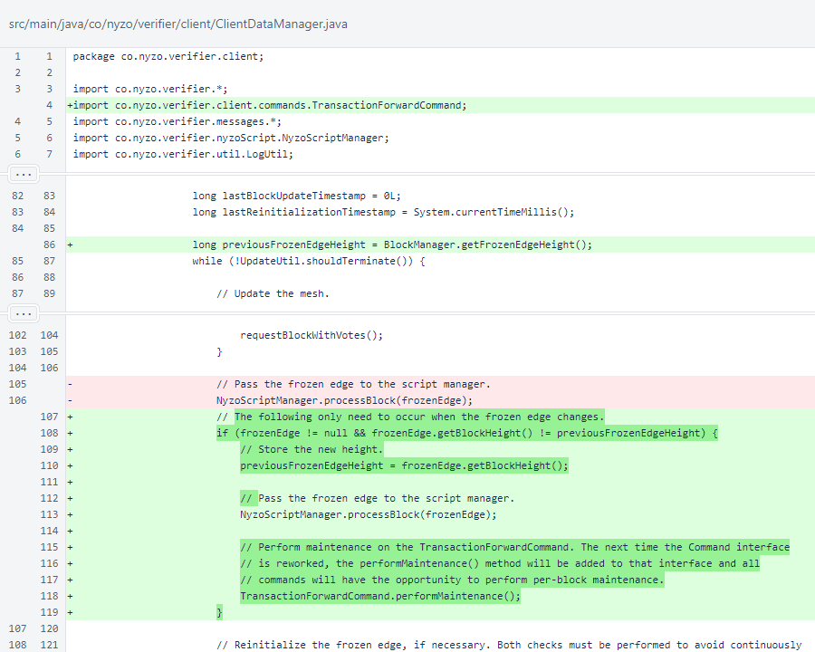
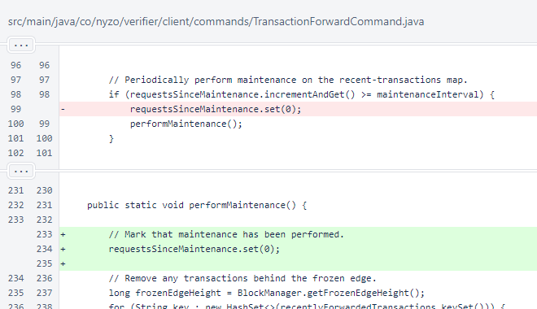
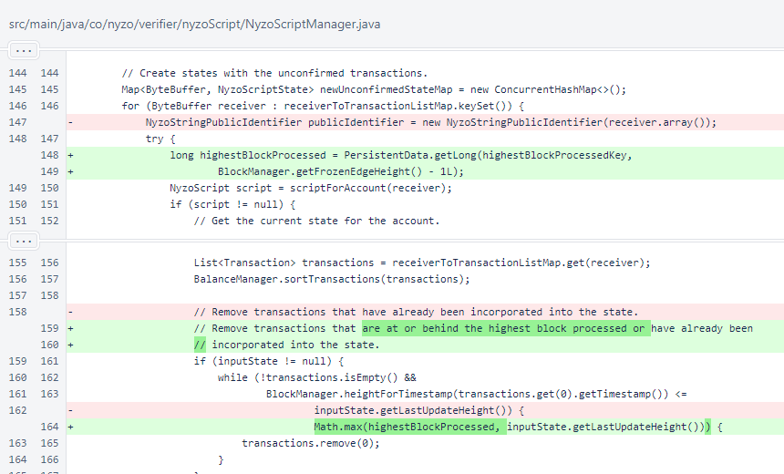

Nyzo 634: unconfirmed-state improvements
Nyzo version 634
(commit on GitHub) improves management of unconfirmed-state processing.
In ClientDataManager, the previousFrozen
EdgeHeight is stored outside the primary loop. This allows detection of frozen-edge changes, and
processes that only need to be performed once per block are no longer called every loop iteration.
The NyzoScriptManager.processBlock() method is now only called once
per block. The TransactionForwardCommand.performMaintenance()
method is also now called once per block. This method was previously run periodically by the
TransactionForwardCommand when it received transactions to prevent the
recentlyForwardedTransactions map from growing too large. The
ClientDataManager has a different motivation for running the method: to
clear out older transactions so they do not get picked up by the NyzoScript
Manager.

In TransactionForwardCommand, reset of the
requestsSinceMaintenance counter was moved inside the
performMaintenance() method so reset will always occur when maintenance is
performed.

In NyzoScriptManager, filtering was added to ensure that all transactions
that no longer have an opportunity to be incorporated into a confirmed script state are removed before processing of
the unconfirmed state.
